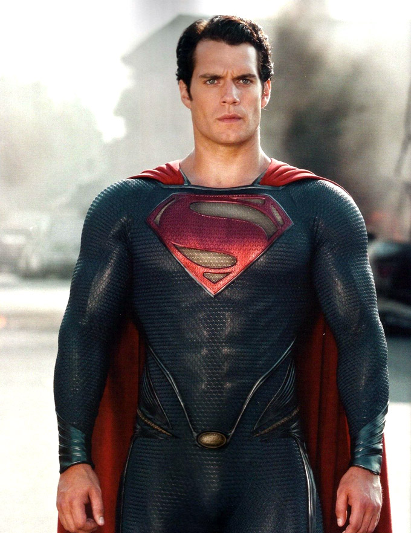
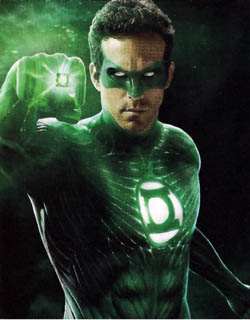

Introduction
This page consists of film reviews on superhero films. They come from various backgrounds of DC Comics and Marvel. I chose this topic of films because I love The Dark Knight. I was originally going to do all of the Dark Knight films, but it is only a trilogy and there would have been a random film, so I expanded it to just superhero films.The Dark Knight Rises

The spectacular, monolithic final movie in Christopher Nolan's Batman trilogy is like a huge piece of industrial machinery: massive, grimly and brutally metallic, capable of lifting great weights and swinging the mightiest wrecking balls, but taking its time about it.
The Batman (even after nearly a decade, no one in Gotham forgoes the definite article) has now been absent from the city for many years, and the city is happy with the specious explanation that the authorities have provided: namely, that the city's late District Attorney Harvey Dent (Aaron Eckhart) heroically gave his life fighting crime, and the Dark Knight, the arch-criminal, has slunk away. Billionaire philanthropist Bruce Wayne has gone into reclusive retirement: both are of course played with intelligence and no little charm by Christian Bale. But now two new subversive figures have burst on to the scene.
A slinky, sexy cat burglar, played by Anne Hathaway, shows up in disguise at a charity fundraiser at Wayne Manor with lawbreaking on her mind. But more scary still, a sinister super-villain, aptly called Bane, is planning to lead an insurrection of underground warriors to destroy the city and take on the Dark Knight. He is a muscular slab of a man with an evil hold on his many followers, and with a hideous facial disfigurement, concealed by a creepy leather respiration mask. As played by Tom Hardy, Bane has presence and force, no question about it. But Heath Ledger's Joker had more charisma, more style, a limber and nimble-footed wickedness. And the Joker had one particular demonic superpower that Bane does not have. You could make out what he was saying.
Starring:
- Christian Bale
- Tom Hardy
- Anne Hathaway
- Joseph Gordon-Levitt
- Christopher Nolan
The film's release confirms what early test screenings of sample footage reportedly hinted at. Bane's animal snarl is often frankly indistinct. His voice sounds like Darth Vader shouting, while playing a bass accordion through a Harley Davidson exhaust pipe. There were times when I wanted Miriam Margoyles to come on, give Bane a brisk clip round the ear and say: "Come on, darling, en – un – ci – ay – tuh!" Well, there is arguably something bestially menacing in that very unintelligibility; actually, the voice clarifies later in the movie, though for me the problem with Bane is in any case not with his voice, more with his conflict with the Dark Knight, of which more in a moment
This movie is operatic, crepuscular, portentous, a vision of apocalyptic catastrophe – and there are some great things in it. Christian Bale himself brings an interesting kind of wounded maturity to the double role, and Nolan elicits from Bale a performance which gives both Bruce Wayne and Batman a new life, as separate entities, by investigating their vulnerabilities and paranoia. When the Dark Knight returns, astride his extraordinary fat-wheeled motorbike, it's really exciting. Joseph Gordon-Levitt gives a terrific performance as the young, idealistic police officer, Detective Blake, and Michael Caine is a calm, shrewd, heartfelt Alfred. Hathaway has a lovely line when some boorish male presumes to sneer at her fantastic high heels. "Do they make it difficult to walk?" She slices through his leg with one and replies pertly: "I don't know – do they?"
Iron Man 3

Three signs you’re watching a Shane Black movie: it’s Christmas, there’s a meta voiceover, and some of the best lines are dispensed by designer-suited henchmen. Pleasingly, Iron Man 3 ticks every box. Just as Joss Whedon pepped up Avengers Assemble with his unique brand of jocosity, here, despite the sci-fi trimmings and goliath budget, it feels like Black’s been given carte blanche by Marvel to do his thing. The result is a swinging caper with wit, balls, heart and exploding baubles. It’s Kiss Kiss Bang Bang with a lot of extra bang. And, by some distance, the Man In The Can’s best solo outing so far.
Together with co-writer Drew Pearce, Black sets out to dismantle Iron Man’s armour piece by piece. Like Bond in Skyfall, Tony Stark loses his flash car and big house. He is also, for a sizeable stretch of the movie, deprived of his super-suits. This is a new, vulnerable side to the playboy-philanthropist: he’s on the run, in the corner, pausing between quips to suffer breathless anxiety attacks.
Part of the problem is PTSD, brought on by his near-fatal tangle with that Chitauri wormhole in New York. But his more pressing concern is a very bad man who goes by the monicker The Mandarin. A shadowy, ethnically indeterminate figure with the didactic menace of Colonel Kurtz and the attack-chopper access of Colonel Kilgore, this terrorist overlord is regularly forcing his way onto US airwaves to threaten dire “lessons”. No-one knows his identity, his location or where he’s buying his extraordinarily nifty video-editing software.
This may all sound like the fixings for another brooding threequel: The Stark Knight Rises. Happily, that’s not how it pans out. Keeping the dial firmly on ‘fun’, the film hustles from one set-piece to the next, leavening the gloom with a lot of big laughs.
Starring:
- Robert Downey Jr.
- Gweneth Platrow
- Don Cheadle
- Guy Pearce
- Shane Black
As well as the customary Downey Jr wisecracks, there are sight gags, bits of slapstick, Downton Abbey references and a genius beat involving a suit of armour turning its head. The ominous introduction of a boy sidekick in the second act turns out to yield some of the sparkiest repartee. And Don Cheadle’s Rhodes, a character who barely made an impression in the other films, is skilfully tweaked, becoming the amusingly square Murtaugh to Tony’s Riggs. Wait until you hear his password.
The series’ villains have always been an issue. Thor gets Loki. Captain America gets the Red Skull. So far, Iron Man has faced a bald Jeff Bridges, Mickey Rourke and a cockatoo. While this outing is an improvement — credit to Black and Pearce for creating antagonists who aren’t just more angry blokes in metal suits — it’s still the film’s weak point. Drawing on the comic-book’s Extremis storyline (a 2005-’06 run by Warren Ellis), Iron Man 3 pits Stark against a squad of T-1000-like super-soldiers who can regenerate body parts and survive astounding damage. They’re visually interesting — glowing like human lava lamps as they try to smelt Tony’s face off — but their motivation is murky and unconvincing.
Far more successful is the aforementioned Mandarin, who in the Iron Man comics is a super-powered martial artist with magic rings. While a close-up shot reveals that his fingers are adorned by rings, there are surprises beneath the character’s sinister hood which we won’t spoil. Suffice to say that people will be talking about Ben Kingsley’s performance for ages to come — it’s a tricky, delicate role, handled beautifully.
Man of Steel (Superman)
It must be the last act of superhero revisionism: abolishing the word "super". In this new movie directed by Zack Snyder, and produced and co-written by Christopher Nolan, the letter on our hero's chest doesn't mean what we all thought it meant. This is no English S, but a Krypton symbol denoting hope. The word "Superman" is stutteringly or suspiciously pronounced, like "the bat man" in the Dark Knight movies. He is referred to by his earthling name, Clark, or his Krypton name, Kal-El, or even as the "alien", by the frowning Pentagon brass. This is a 21st-century superhero who must steel himself against the agonies of being misunderstood by the people he is trying to help.
The origin myth is perhaps the most interesting part of any superhero story; for some, the only interesting part. Snyder has created a colossal, grandiose genesis for the Man of Steel, a titanic Moses-out-of-Nietzsche tale, a planet-clashing spectacle that is seen perpetually through a glowing, lens-flaring light: the opposite of the twilight of the gods – the daybreak of the titans. We go way, way back, substantially before Clark Kent coolly makes his career leap into journalism, joining the Daily Planet as a "stringer", a move that incidentally shows that CV-faking must be one of his superpowers.
Starring:
- Henry Cavill
- Amay Adams
- Michael Shannon
- Zack Snyder
There are some striking ideas and images, and interesting casting for the chief role. To go with his gym-built, digitally assisted pecs, abs and thighs, Britain's Henry Cavill has a thin, intriguingly pale and sensitive face, with a buttock-cleft on his nose, like George Osborne, a nose that will surely make him very identifiable up close in the Planet newsroom, chunky glasses or no chunky glasses. Cavill's Clark has an fraught relationship with his tough foster-mom and troubled foster-dad: nice performances from Diane Lane and Kevin Costner. He faces off satisfyingly with his terrifying Krypton enemy, General Zod, of whom more in a moment. But this story doesn't quite have the wit of Joss Whedon's assembly of Avengers, nor the gothic seriousness of Nolan's Dark Knight, and the all-important romantic spark with Lois Lane, played by Amy Adams, sadly isn't there. There's naturally a lot of swooping and flying: compulsory for 3D films.
Snyder and Nolan have modified the beginning of the story so that a primal clash has been designed into the narrative from the get-go. (There is, as yet, no sign of the famous adversary Lex Luthor, although keen-eyed observers will later note trucks on the streets of the Metropolis belonging to "Lexcorp".) The planet Krypton is dying, because of environmental issues. Dignified soldier-statesman Jor-El rails against mismanagement of the planet's resources; he is played by Russell Crowe with a posh British accent, presumably hailing from a part of the planet far distant from that of General Zod, played by Michael Shannon with an American accent. Zod uses the crisis to launch a failed mutiny against the planet's revered leaders.
Green Lantern
"Green Lantern" presents yet another case of a human being given the responsibility of leading the battle of good vs. evil, or, in this case, of the Will vs. Fear. We learn that an ancient race of aliens has divided the universe into segments to enforce peace, but is being resisted by an alien named Parallax, who went off on his own, committed the sin of pride and became a prince of darkness. If he reminds you of Satan, that can't be helped. Every superhero requires a malevolent egomaniac to battle.
The movie stars Ryan Reynolds as Hal Jordan, a test pilot who proves that humans are better at flying fighter planes than computers. His fellow pilot is Carol Ferris (Blake Lively), the daughter of the tycoon Carl Ferris (Jay O. Sanders), who manufactures the fighters. Does Carl worry about his daughter flying in dogfights at supersonic speeds? To answer that question would require him to reveal emotion, and he is locked immobile in Superhero Tycoon Mode.
Far away in the universe, the benign aliens have created the Green Lantern Corps to spread out and combat the evil Parallax. One of these corpsmen is sent on a mission to find a worthy man on Earth to become a member of the corps. His spaceship, which has survived a journey across the cosmos, crash-lands, and he lives long enough to hand over a green ring and a lantern to, of course, Hal Jordan. Hal learns that the ring gives him great power, but he must believe in the triumph of his Will and conquer the weakness of Fear.
Starring:
- Ryan Reynolds
- Blake Lvely
- Peter Sarsgaard
- Martin Campbell
If this sounds childish, of course it is. One of the absurdities of many modern superhero movies is how they adorn silly plots with great solemnity and millions of dollars in special effects. Nor does "Green Lantern" shortchange us on dialogue; indeed, it spends a great deal of time at the impossible task of explaining the logic and rules of its plot. I am amazed at how calmly humans absorb and accept the incredulities of these stories ("Waitaminit! I wear this magic green ring and I'm a superhero? Gee, that's every kid's dream!")
"Green Lantern" does not intend to be plausible. It intends to be a sound-and-light show, assaulting the audience with sensational special effects. If that's what you want, that's what you get. Among them are numerous split-second journeys across galaxies by speeding green spheres that shuttle between Earth and the domain of the aliens, while dismissing all technicalities of the speed of life. I nostalgically recalled "Thor," in which Thor commutes to Earth to do battle with the avatars of his own satanic malevolent egomaniac.
The problem with many of these special effects is that they don't take on the gravity and substance of real events; they are an obvious extrusion of animation into the physical world. Often they take forms created by Hal Jordan's imagination, because whatever he wills becomes real. I suppose that goes with the territory.